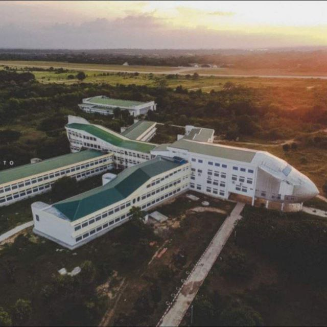
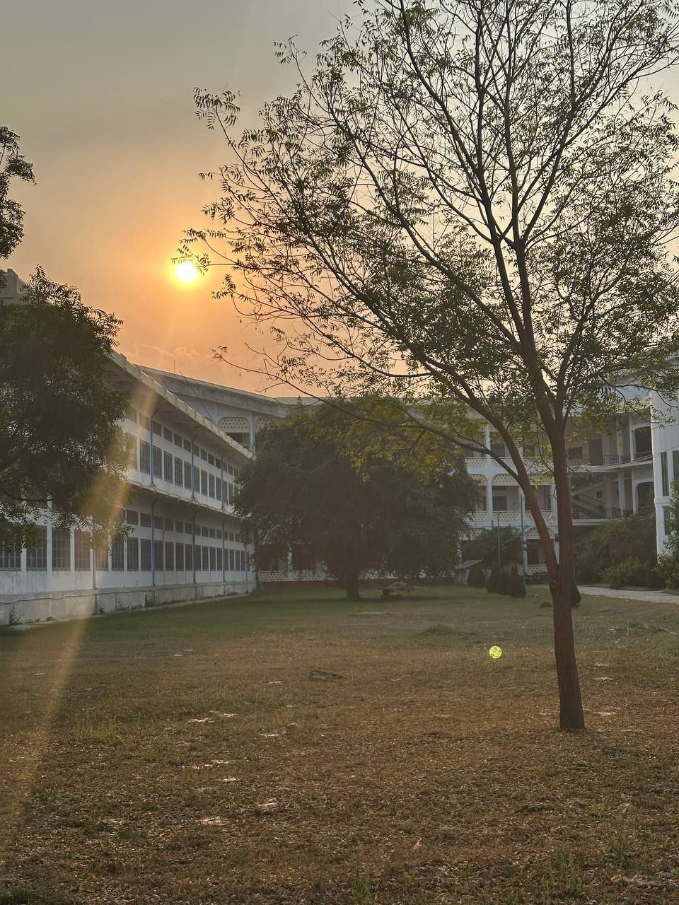

About the University
Myanmar Aerospace Engineering University (MAEU) is Myanmar's only dedicated aerospace engineering institution, established in February 2002 in Meiktila, Mandalay Division. Located on the Yangon–Mandalay highway next to the Myanmar Air Force Ground Training Base, it is the country's sole pathway for students who wish to pursue a degree in aerospace, avionics, space systems, or propulsion engineering.
MAEU offers five 6-year Bachelor of Engineering (B.E.) specialisations — Propulsion and Flight Vehicles, Avionics, Electrical Systems and Instrumentation, Fuel and Propellant Engineering, and Space Systems Engineering — as well as a 1-year postgraduate Diploma in Airport Management (Dip.A.M.).
The university's vision is to become an internationally recognised aerospace and space-science institution. Its mission centres on internationally accredited engineering education under the Washington Accord and QMS standards, collaboration with ICAO, and partnerships with domestic and international aviation and aerospace organisations.
မြန်မာနိုင်ငံ လေကြောင်းနှင့်အာကာသပညာတက္ကသိုလ် (MAEU) သည် မန္တလေးတိုင်းဒေသကြီး၊ မိတ္ထီလာမြို့တွင် တည်ရှိသော လေကြောင်းနှင့် အာကာသအင်ဂျင်နီယာဘာသာရပ် အထူးပြု အစိုးရပိုင် တက္ကသိုလ်တစ်ခုဖြစ်ပြီး ၂၀၀၂ ခုနှစ် ဖေဖော်ဝါရီလတွင် စတင်တည်ထောင်ခဲ့သည်။
MAEU တွင် Propulsion and Flight Vehicles, Avionics, Electrical Systems and Instrumentation, Fuel and Propellant Engineering နှင့် Space Systems Engineering တို့ကို ၆ နှစ်ကြာ BE ဒီဂရီအဖြစ် သင်ကြားပေးပြီး Airport Management အတွက် တစ်နှစ်တာ Post‑Graduate Diploma လည်း ပေးအပ်သည်။
တက္ကသိုလ်၏ Vision သည် နိုင်ငံတကာအသိအမှတ်ပြု တက္ကသိုလ်တစ်ခု ဖြစ်လာရန်ဖြစ်ပြီး Mission တွင် Washington Accord နှင့် Quality Management System တို့အပေါ် အခြေခံသည့် နိုင်ငံတကာအတည်ပြု အင်ဂျင်နီယာပညာရေး ဖော်ဆောင်ရေး၊ ICAO နှင့် ပူးပေါင်းဆောင်ရွက်ရေး၊ ပြည်တွင်း/ပြည်ပ လေကြောင်းအဖွဲ့အစည်းများနှင့် ချိတ်ဆက်ရေးတို့ကို အဓိကထားသည်။
Why Choose MAEU?
Aerospace Specialisation
Myanmar's only dedicated aerospace engineering university — no other institution offers these specialised programs. If you want to build aircraft, design satellites, or work with propulsion systems, MAEU is the single pathway.
Meiktila Air Force Base — Direct Industry Link
Located right next to the Myanmar Air Force Ground Training Base — students gain direct exposure to operational aircraft, military aviation infrastructure, and real aerospace environments from their first year.
45.5-Hectare Specialised Campus
Extensive campus on the Yangon–Mandalay highway with specialised aerospace infrastructure, research facilities, labs, and space for UAV testing and development — unlike any other university campus in Myanmar.
Comprehensive 6-Year B.E. Programs
Five distinct Bachelor of Engineering tracks covering propulsion, avionics, electrical systems, fuel & propellant, and space systems — one of the longest and most in-depth engineering degrees in Myanmar.
UAV Research Department
Dedicated Unmanned Aerial Vehicle (UAV / drone) research department — one of the very few institutions in Myanmar with a formal drone-technology research programme, placing MAEU at the frontier of modern aerospace development.
Defense & Aviation Career Pipeline
The primary institutional pipeline to careers in Myanmar Air Force, government aviation agencies, defense research, and the emerging domestic aerospace industry — MAEU graduates are in a unique position in a highly specialised field.
Campus Gallery




Available Programs
Five 6-year Bachelor of Engineering specialisations plus a postgraduate diploma in Airport Management
Propulsion and Flight Vehicles (PFV)
Focus on aircraft propulsion systems, flight vehicle design, aerodynamics, and structures — the core aerospace engineering specialisation covering the science of how aircraft and rockets are powered and how they fly.
Avionics (AV)
Focus on aircraft electronics, communication, navigation, and control systems — training engineers who design and maintain the electronic brains and senses of modern aircraft.
Electrical Systems and Instrumentation (EI)
Focus on aircraft electrical power, sensors, measurement systems, and instrumentation design — engineers who ensure accurate data measurement, power distribution, and system monitoring on aircraft.
Fuel and Propellant Engineering (FPE)
Focus on aerospace fuels, propellant technology, rocket fuel systems, explosives testing, and quality control — one of Myanmar's most unique engineering pathways, combining chemistry and aerospace engineering for rocket and aircraft fuel specialists.
Space Systems Engineering (SSE)
Focus on satellite and spacecraft systems, orbital mechanics, space mission analysis, remote sensing, and satellite communications — Myanmar's only space-engineering degree, training the next generation of specialists for the growing space-technology sector.
Airport Management (Dip.A.M.)
A one-year postgraduate diploma for graduates entering airport operations and management roles — covering airport administration, aviation safety, ground operations, and regulatory compliance. The shortest and most direct pathway to a civil aviation management career.
Research & Projects
Aerospace technology development at MAEU — UAV research and Air Force collaboration
Department of UAV Research — Drone Technology Development
MAEU has a dedicated Unmanned Aerial Vehicle (UAV) Research Department — one of the very few formal drone-technology research units at any university in Myanmar. The department focuses on aerospace technology development, UAV design, and flight systems research. Specific project outcomes are not publicly documented, but the unit represents MAEU's commitment to cutting-edge aerospace innovation.
Myanmar Air Force Ground Training Base — Partnership
Located directly next to the Myanmar Air Force Ground Training Base in Meiktila, MAEU maintains a close institutional partnership with the military aviation sector. This provides students with exposure to operational aircraft and real-world aerospace infrastructure — a practical advantage unavailable at any other university in Myanmar.
Washington Accord & ICAO Alignment
MAEU is actively pursuing Washington Accord accreditation and collaboration with ICAO (International Civil Aviation Organisation) — aligning its engineering programs with internationally recognised standards and opening pathways for graduates to work in global aviation and aerospace industries.
Campus Life at MAEU Meiktila
Specialised aerospace engineering campus on the Yangon–Mandalay highway

45.5-Hectare Aerospace Campus
Extensive specialised campus on the Yangon–Mandalay highway — with dedicated aerospace engineering labs, UAV research facilities, and infrastructure unlike any other university in Myanmar.

Military-Affiliated Environment
Located next to Myanmar Air Force Ground Training Base — students are exposed to operational military aviation, real aircraft, and defense-engineering environments throughout their studies.

Highly Selective Student Body
MAEU admits only the highest-scoring science students — creating a focused, elite peer group of future aerospace engineers, avionics specialists, and space-systems engineers working together across a 6-year program.
Career Opportunities
MAEU graduates entering Myanmar's aerospace, defense, and aviation sectors
Myanmar Air Force
The primary career destination for MAEU graduates — as aerospace engineers, avionics technicians, propulsion specialists, and instrumentation officers supporting Myanmar's military aviation fleet.
Defense Research & Development
Join government defense research institutes working on aerospace technology, propulsion systems, UAV development, and military-equipment engineering — applying specialised knowledge from all five B.E. tracks.
Government Aviation Agencies
Work with the Department of Civil Aviation, Airports Authority, or Myanma Airways as technical engineers, airworthiness inspectors, or aviation safety officers — roles requiring exactly the specialised knowledge MAEU provides.
UAV & Drone Industry
Enter the fast-growing unmanned aerial vehicle sector — designing, testing, and operating drone systems for agriculture, surveillance, mapping, logistics, and defense applications.
Space & Satellite Technology
Specialise in satellite engineering, remote sensing, and space mission analysis for government agencies and international organisations — a growing field as Myanmar develops its space technology capabilities.
Airport Operations & Management
Dip.A.M. holders step directly into airport operations, ground-handling management, and aviation administration — working at Yangon International Airport, Mandalay International Airport, and other facilities across Myanmar.
Primary Career Destinations
Alumni & Graduate Outcomes
MAEU graduates — Myanmar's only cohort of aerospace-trained engineers
Aerospace & Avionics Engineers
Myanmar Air Force & Defense SectorMAEU graduates are the primary source of trained aerospace and avionics engineers for Myanmar's Air Force — serving as propulsion engineers, avionics officers, instrumentation specialists, and technical staff across the military aviation sector.
Government Aviation Officers
Department of Civil AviationTechnical graduates working in airworthiness inspection, aviation safety oversight, and airport technical management — applying their 6-year B.E. training in Myanmar's growing civil aviation sector.
Space & UAV Specialists
Emerging Technology SectorSpace Systems Engineering and UAV research graduates entering the fast-growing drone and satellite sectors — contributing to remote sensing, GIS, satellite communications, and drone-technology development in Myanmar and beyond.
Airport Management Professionals
Dip.A.M. GraduatesPostgraduate diploma holders managing airport operations, ground-handling services, and aviation administration at Myanmar's international and domestic airports — one of the most direct and practical career pathways MAEU offers.